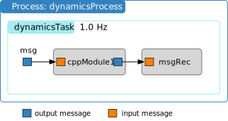
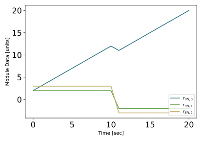

Creating Stand-Alone Messages¶
The prior example showed how to connect messages that are embedded within the Basilisk modules. However, there are times where you might need to create a stand-alone copy of such a message. Some flight algorithm modules require the input of a stand-alone message that provides information about the spacecraft mass and inertia properties, or thruster or reaction wheel configuration information. For example, the module unit test ideally just runs the module being tested. Any input messages that this module needs should be created as stand-alone messages. This avoids the unit test script depending on other modules output messages, but makes the module test function on its own.
This tutorial shows you how to create a stand-alone message and connect the Module: cppModuleTemplate input message to it. The syntax is identical to connect a stand-alone message to a C module. Further, this example illustrates how the simulation can be started and stopped multiple times while the message or module variables are changed between runs.
To create a stand-alone message, the message payload (i.e. data) container must be created first. Let us assume the message is of type someMsg. The corresponding payload is called someMsgPayload. Thus, the payload container is created using:
msgData = messaging.someMsgPayload()
Essentially this is a python instance of the message structure definition found in architecture/msgPayloadDefC/SomeMsg.h. The content of the message payload is zero’d on creating it. If there is a variable in the structure that we want to change, this is done simply with:
msgData.variable = .....
Next, a message object is created and the message data is written to it. The message object is created using:
msg = messaging.someMsg()
The payload is written to the message using:
msg.write(msgData)
These steps can also be combined into a single line using:
msg = messaging.someMsg().write(msgData)
The simulation code below creates a stand-alone message that is then connected to the module input message.
1
2import sys
3
4import matplotlib.pyplot as plt
5from Basilisk.architecture import messaging
6from Basilisk.moduleTemplates import cppModuleTemplate
7from Basilisk.utilities import SimulationBaseClass
8from Basilisk.utilities import macros
9from Basilisk.utilities import unitTestSupport
10
11
12def run():
13 """
14 Illustration of creating stand-alone messages
15 """
16
17 # Create a sim module as an empty container
18 scSim = SimulationBaseClass.SimBaseClass()
19
20 # create the simulation process
21 dynProcess = scSim.CreateNewProcess("dynamicsProcess")
22
23 # create the dynamics task and specify the integration update time
24 dynProcess.addTask(scSim.CreateNewTask("dynamicsTask", macros.sec2nano(1.)))
25
26 # create modules
27 mod1 = cppModuleTemplate.CppModuleTemplate()
28 mod1.ModelTag = "cppModule1"
29 scSim.AddModelToTask("dynamicsTask", mod1)
30
31 # create stand-alone input message
32 msgData = messaging.CModuleTemplateMsgPayload()
33 msgData.dataVector = [1., 2., 3.]
34 msg = messaging.CModuleTemplateMsg().write(msgData)
35
36 # connect to stand-alone msg
37 mod1.dataInMsg.subscribeTo(msg)
38
39 # setup message recording
40 msgRec = mod1.dataOutMsg.recorder()
41 scSim.AddModelToTask("dynamicsTask", msgRec)
42
43 # initialize Simulation:
44 scSim.InitializeSimulation()
45
46 # configure a simulation stop time and execute the simulation run
47 scSim.ConfigureStopTime(macros.sec2nano(10.0))
48 scSim.ExecuteSimulation()
49
50 # change input message and continue simulation
51 msgData.dataVector = [-1., -2., -3.]
52 msg.write(msgData)
53 scSim.ConfigureStopTime(macros.sec2nano(20.0))
54 scSim.ExecuteSimulation()
55
56 # plot recorded data
57 plt.close("all")
58 figureList = {}
59 plt.figure(1)
60 for idx in range(3):
61 plt.plot(msgRec.times() * macros.NANO2SEC, msgRec.dataVector[:, idx],
62 color=unitTestSupport.getLineColor(idx, 3),
63 label='$r_{BN,' + str(idx) + '}$')
64 plt.legend(loc='lower right')
65 plt.xlabel('Time [sec]')
66 plt.ylabel('Module Data [units]')
67 figureList["bsk-5"] = plt.figure(1)
68 if "pytest" not in sys.modules:
69 plt.show()
70 plt.close("all")
71
72 return figureList
73
74
75if __name__ == "__main__":
76 run()
After the simulation runs for 10s, the stand-alone message data is changed and written into the message object. Note that the stand-alone message object itself doesn’t have to be re-created as this is still working and connected to the desired modules. Rather, we only have to update the content of the message.
Next, the simulation stop time is extended for an additional 10s to 20s total and the simulation is executed again. The resulting plot of the module output message is shown below.
